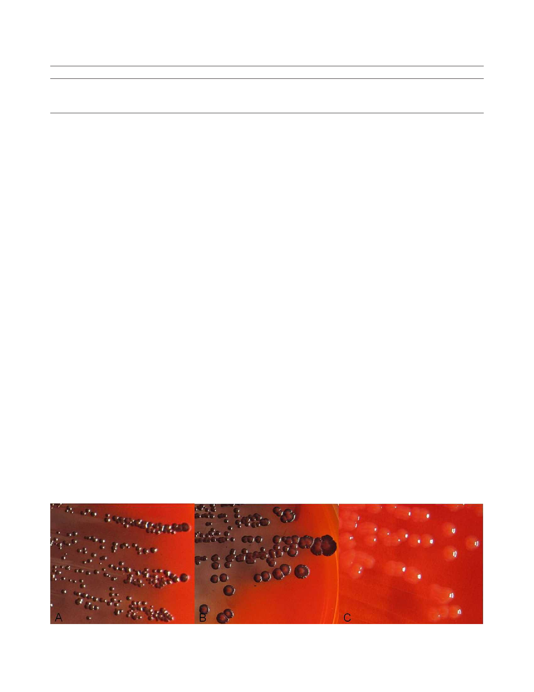

5626 Hou et al.
IOVS, August 2012, Vol. 53, No. 9
TABLE 2. Results of CRA Test, Microtiter Plate Assay, and Gene Detection of S. epidermidis, S. aureus, and P. aeruginosa
Sample
CRA Positive, n (%)
Adherence Positive, n (%)
Gene Positive, n (%)
S. epidermidis
S. aureus
P. aeruginosa
* P < 0.01.
† P < 0.01.
33/96 (34.38%)*
15/27 (55.56%)*
0/29 (0%)*
27/96 (28.13%)†
14/27 (51.90%)†
0/29 (0%)†
39/96 (40.63%)-icaA
3/27 (11.11%)-icaA
9/29 (31.03%)-pslA
Oberkochen, Germany) operating at 20 kV. Images were digitized and
stored as tagged image file format files in the microscope computer.
Statistical Analysis
Statistical analysis of biofilm formation was performed using SPSS
software (IBM Corp., Armonk, NY). The number of biofilm-positive
strains among S. epidermidis, S. aureus, and P. aeruginosa were
compared, using the v2 test. The consistency test among the CRA
method, the microtiter plate assay, and the gene detection method of S.
epidermidis strains were performed by the v2 test. For the comparison
of biofilm formation in different isolation sites, the v2 test was used to
determine whether any of the groups exhibited a statistically significant
different percentage of biofilm formation. For all tests, P less than 0.05
was considered significant.
RESULTS
CRA Method
The CRA method was used on 96 S. epidermidis, 27 S. aureus,
and 29 P. aeruginosa clinical strains. The colonies of the
biofilm-positive strains, ATCC 35984 and PAO1, appeared
black, while the colonies of the biofilm-negative strain, ATCC
12228, appeared red.
Thirty-three of 96 (34.38%) isolates of S. epidermidis
formed black colonies, 15 of 27 (55.56%) S. aureus clinical
strains formed black colonies, whereas no P. aeruginosa
clinical strain formed black colonies (Table 2). Photographs of
the isolates are shown in Figure 2. When the number of CRA-
positive strains among S. epidermidis, S. aureus, and P.
aeruginosa was compared, the difference was statistically
significant (P < 0.01) (Table 2).
Microtiter Plate Assay
Using the microtiter plate assay, the biofilm-positive strains,
ATCC 35984 and PAO1, had an OD greater than 0.12, while the
biofilm-negative strain, ATCC 12228, had an OD less than 0.12.
Twenty-seven of 96 (28.13%) S. epidermidis strains and 14 of
27 (51.90%) S. aureus strains were determined to be
adherence-positive strains, while no P. aeruginosa strains
were determined to be adherence positive. When the number
of adherence-positive strains using the microtiter plate assay
among S. epidermidis, S. aureus, and P. aeruginosa were
compared, the difference was statistically significant (Table 2).
Genetic Techniques
Thirty-nine of 96 (40.63%) S. epidermidis strains carried the
icaA gene, while only 3 of 27 (11.11%) S. aureus strains carried
the icaA gene (Table 2). Eight strains of S. epidermidis carried
the icaA gene, but were shown to be phenotypic negative
using both the CRA method and the microtiter plate assay.
Three phenotypic-positive strains using the CRA method and
one adherence-positive strain using the microtiter plate assay,
did not possess the icaA gene.
Twelve strains of S. aureus did not carry the icaA gene, but
were determined to be phenotypic positive using both the
CRA method and the microtiter plate assay. As expected, the
icaA gene was detected in the biofilm-forming strain ATCC
35984, but not in the non–biofilm-forming strain ATCC 12228.
The pslA gene was detected in the reference strain PAO1 and 9
of the 29 (31.03%) P. aeruginosa clinical strains (Table 2).
In a consistency test of S. epidermidis strains, consistency
between the CRA method and the microtiter plate assay was
89.6% (86/96; j ¼ 0.759; P < 0.01) (Table 3). Consistency
between the CRA method and the gene detection method was
87.5% (84/96; j ¼ 0.734; P < 0.01) (Table 3), and the
consistency between the microtiter plate assay and the gene
detection method was 85.4% (82/96; j ¼ 0.682; P < 0.01)
(Table 3). Thus, these combined results showed correlations
between the three methods.
Scanning Electron Microscopy Analysis
Our study was also designed to assess the morphologic features
of strains that adhere to cover slips. For those biofilm-positive
FIGURE 2. Results of the CRA method. (A) CRA-positive strain of S. epidermidis presented as black colonies. (B) CRA-positive strain of S. aureus
presented as black colonies. (C) CRA-negative strain of P. aeruginosa presented as red colonies.
Downloaded from iovs.arvojournals.org on 12/12/2022